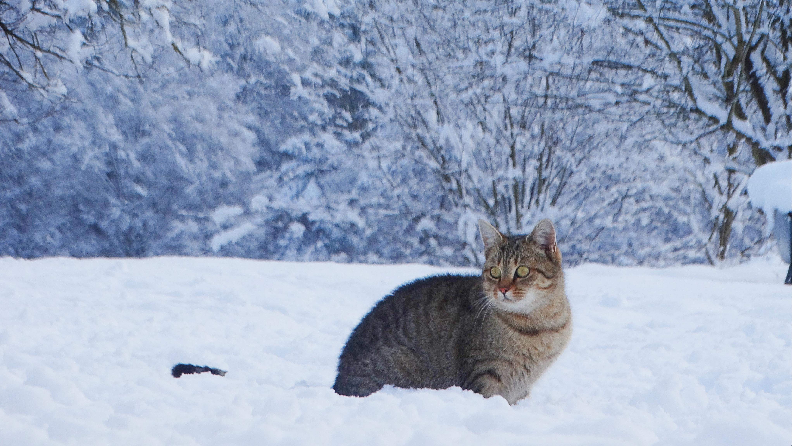

Introduction:
The cat (Felis catus), commonly referred to as the domestic cat or house cat, is the only domesticated species in the family Felidae. Recent advances in archaeology and genetics have shown that the domestication of the cat occurred in the Near East around 7500 BC. It is commonly kept as a house pet and farm cat, but also ranges freely as a feral cat avoiding human contact. It is valued by humans for companionship and its ability to kill vermin. Its retractable claws are adapted to killing small prey like mice and rats. It has a strong, flexible body, quick reflexes, sharp teeth, and its night vision and sense of smell are well developed. It is a social species, but a solitary hunter and a crepuscular predator. Cat communication includes vocalizations like meowing, purring, trilling, hissing, growling, and grunting as well as cat body language. It can hear sounds too faint or too high in frequency for human ears, such as those made by small mammals. Female domestic cats can have kittens from spring to late autumn in temperate zones and throughout the year in equatorial regions, with litter sizes often ranging from two to five kittens. Domestic cats are bred and shown at events as registered pedigreed cats, a hobby known as cat fancy. Animal population control of cats may be achieved by spaying and neutering, but their proliferation and the abandonment of pets has resulted in large numbers of feral cats worldwide, contributing to the extinction of bird, mammal and reptile species.Evolution:
domestic cat is a member of the Felidae, a family that had a common ancestor about 10 to 15 million years ago.[24] The evolutionary radiation of the Felidae began in Asia during the Miocene around 8.38 to 14.45 million years ago.[25] Analysis of mitochondrial DNA of all Felidae species indicates a radiation at 6.46 to 16.76 million years ago.[26] The genus Felis genetically diverged from other Felidae around 6 to 7 million years ago.[25] Results of phylogenetic research shows that the wild members of this genus evolved through sympatric or parapatric speciation, whereas the domestic cat evolved through artificial selection.[27] The domestic cat and its closest wild ancestor are diploid and both possess 38 chromosomes[28] and roughly 20,000 genes.[29]Sociability:
Social behavior of the domestic cat ranges from widely dispersed individuals to feral cat colonies that gather around a food source, based on groups of co-operating females.[94][95] Within such groups, one cat is usually dominant over the others.[96] Each cat in a colony holds a distinct territory, with sexually active males having the largest territories, which are about 10 times larger than those of female cats and may overlap with several females' territories. These territories are marked by urine spraying, by rubbing objects at head height with secretions from facial glands, and by defecation.[80] Between these territories are neutral areas where cats watch and greet one another without territorial conflicts. Outside these neutral areas, territory holders usually chase away stranger cats, at first by staring, hissing, and growling, and, if that does not work, by short and violent, noisy attacks. Though, cats do not have a social survival strategy or herd behavior, they always hunt alone.[97]Hunting and Feeding:
Feral cats and free-fed house cats consume several small meals in a day. The frequency and size of meals varies between individuals. They select food based on its temperature, smell and texture; they dislike chilled foods and respond most strongly to moist foods rich in amino acids, which are similar to meat. Cats reject novel flavors (a response termed neophobia) and learn quickly to avoid foods that have tasted unpleasant in the past.[97][127] It is also a common misconception that cats like milk/cream, as they tend to avoid sweet food and milk. Most adult cats are lactose intolerant; the sugar in milk is not easily digested and may cause soft stools or diarrhea.[128] Some also develop odd eating habits and like to eat or chew on things like wool, plastic, cables, paper, string, aluminum foil, or even coal. This condition, pica, can threaten their health, depending on the amount and toxicity of the items eaten.[129]Impact on wildlife:
On islands, birds can contribute as much as 60% of a cat's diet.[190] In nearly all cases, the cat cannot be identified as the sole cause for reducing the numbers of island birds, and in some instances, eradication of cats has caused a "mesopredator release" effect;[191] where the suppression of top carnivores creates an abundance of smaller predators that cause a severe decline in their shared prey. Domestic cats are a contributing factor to the decline of many species, a factor that has ultimately led, in some cases, to extinction. The South Island piopio, Chatham rail,[138] and the New Zealand merganser[192] are a few from a long list, with the most extreme case being the flightless Lyall's wren, which was driven to extinction only a few years after its discovery.[193][194] One feral cat in New Zealand killed 102 New Zealand lesser short-tailed bats in seven days.[195] In the United States, feral and free-ranging domestic cats kill an estimated 6.3–22.3 billion mammals annually.[136]Different types of Cats



Interactions with humans